Префектура Тотиги · Насу · агритуризм
RISONARE Насу: завтрак с местных полей и фермерские уроки у подножия гор
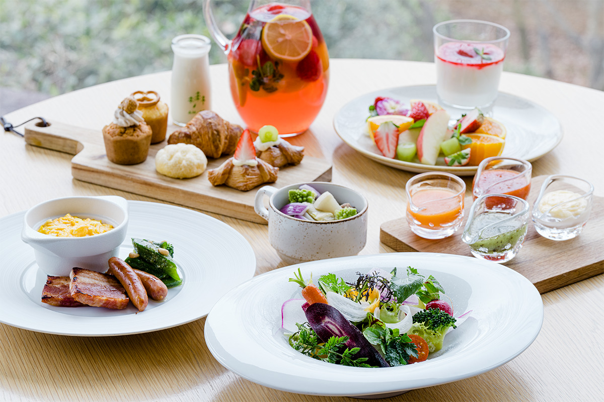
Курорт RISONARE Насу стоит у подножия гор Насу, в полутора часах от Токио на синкансэне и автобусе. Здесь можно поработать на огороде, посадить рис и набрать трав, а начинается день с завтрака, в котором почти всё выросло на соседних полях.
Место
Курорт посреди полей и леса
Нагорье Насу на севере префектуры Тотиги называют «королевским курортом»: здесь стоит летняя резиденция императорской семьи. Над нагорьем поднимается цепь гор Насу, и путешественников сюда тянут смена сезонов, местная еда и прогулки на природе.
RISONARE Насу из сети Hoshino Resorts расположен на склоне этих гор, на высоте около 500 метров. Концепцию курорта здесь называют агритуризмом: слово сложено из итальянских «агрикультура» и «туризм», и весь отдых строится вокруг природы и сельского труда. На территории около 14 гектаров стоят главный и дополнительный корпуса, огород «Агри-гарден», центр занятий POKO POKO и четыре рисовых поля. Многие гости просто гуляют по лесу или ловят насекомых.
Завтрак
Шестьдесят блюд и овощи с соседних полей
Вкус агритуризма лучше всего чувствуется за завтраком в ресторане-буфете SHAKI SHAKI. Зал открытый и полный солнца, а за окнами стоят деревья в утренней росе. На столах около 60 блюд: западная и японская кухня, фрукты, хлопья. Но первыми внимание привлекают яркие свежие овощи.
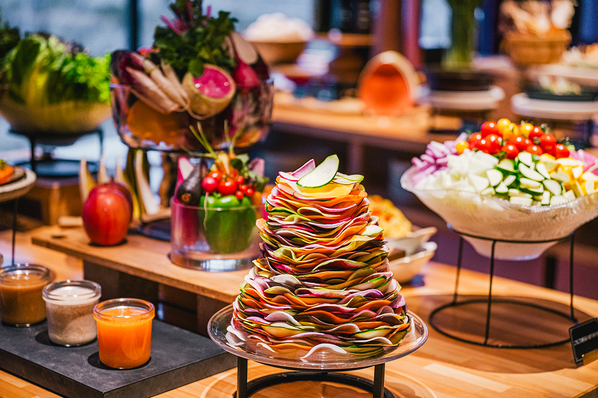
Здесь бывают дайкон, морковь, репа и многое другое, и в основном это свежий урожай местных фермеров. Одни и те же овощи подают дважды: тонкими ломтиками в «тонком салате» и крупными кусками в «овощной тарелке». Удивительно, как меняются вкус и хруст от одного только способа нарезки.
«Обязательно попробуйте салаты: в них чувствуется вкус самих овощей»
шеф-повар ресторана
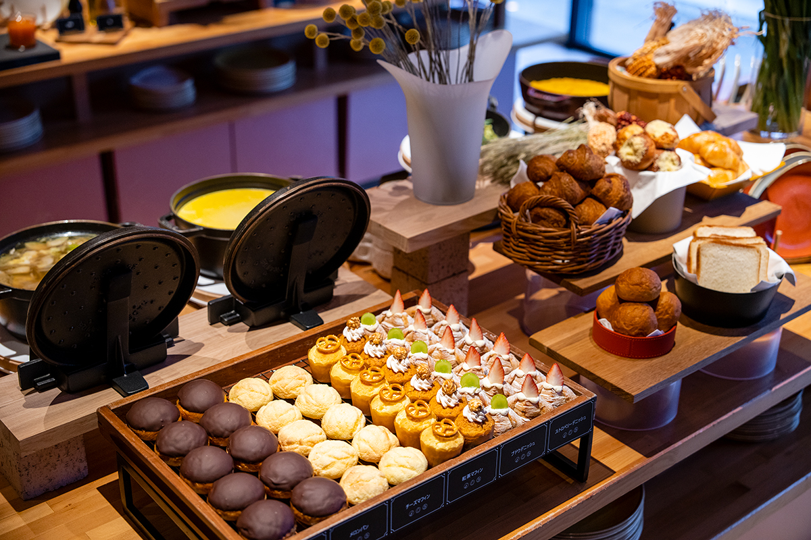
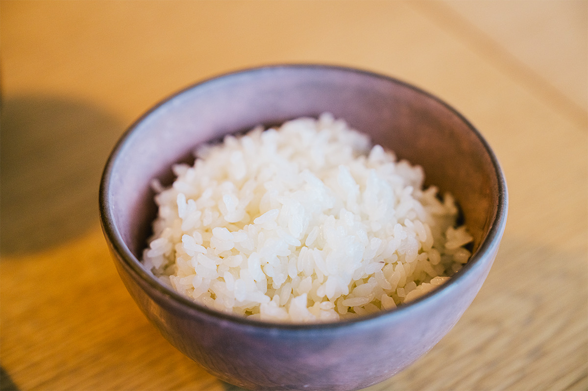
Занятия
От грядки до рисового поля
После сытного завтрака самое время отправиться на огород и в лес. Выезд из номера здесь в 12:00, утро получается длинным, и на него рассчитано много занятий. В 2023 году многие из них были бесплатными и без записи.
Самое популярное из них называется «Фермерский урок»: гости выращивают рассаду, вскапывают грядки и собирают урожай на огороде «Агри-гарден». Ничего брать с собой не нужно, прийти может кто угодно, от детей до пожилых. Сотрудники учились у местного хозяйства, которое растит овощи без пестицидов, и рассказывают гостям, что важно для фермеров. За работой как-то сам собой просыпается интерес к тому, что лежит на тарелке. Сельский труд здесь не сводят к сбору урожая: объясняют, какая работа нужна каждой культуре в каждом месяце. В 2026 году «Фермерский урок» длится 45 минут, он для гостей курорта, бесплатный, но записаться нужно заранее, после заезда.
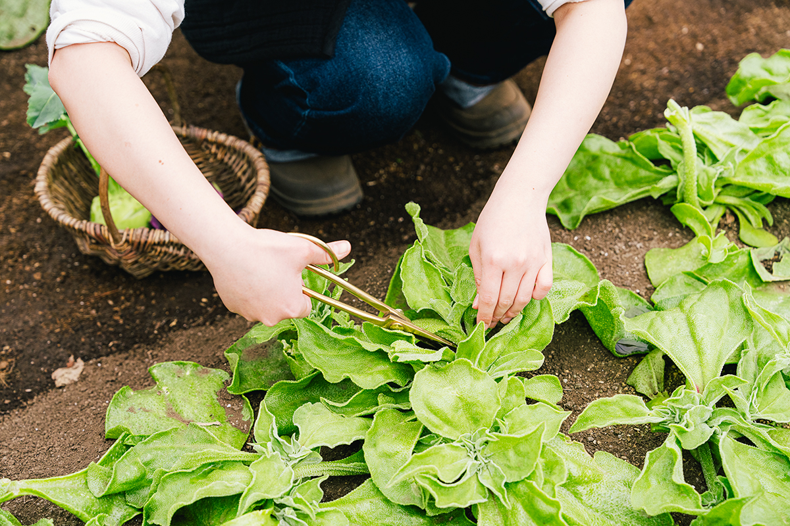
В теплице «Грин-хаус» на огороде заваривают травяной чай и шьют саше, мешочки с ароматными травами, и так можно чуть-чуть заглянуть в жизнь фермеров, которые берут всё нужное у природы. Если захочется перекусить, в POKO POKO можно испечь пиццу в каменной печи и съесть её горячей прямо в лесу.
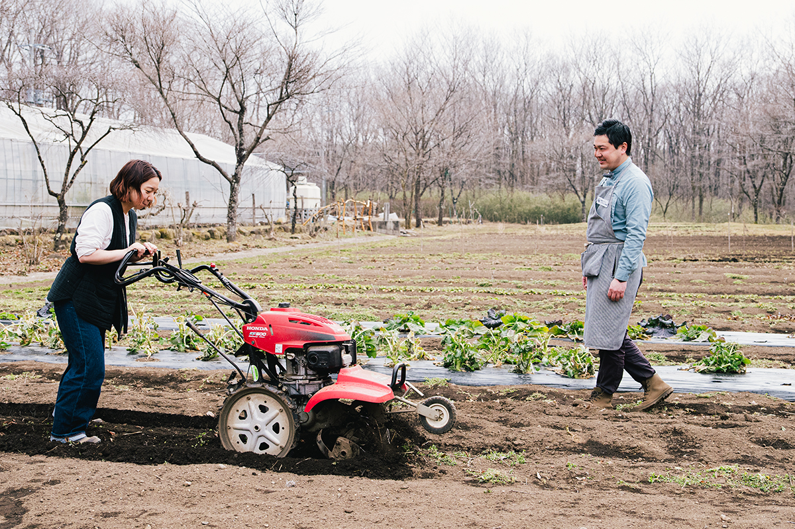
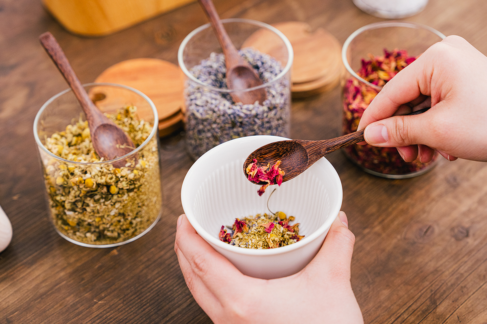
Агритуризм показывает силу и богатство природы, которых не увидишь в городе. Многие гости после выезда заезжают на ферму «Синрин-но бокудзё», где получают молоко джерсейских коров, которое подают за завтраком. Видимо, близкое знакомство с тем, как появляется еда, меняет взгляд на неё.
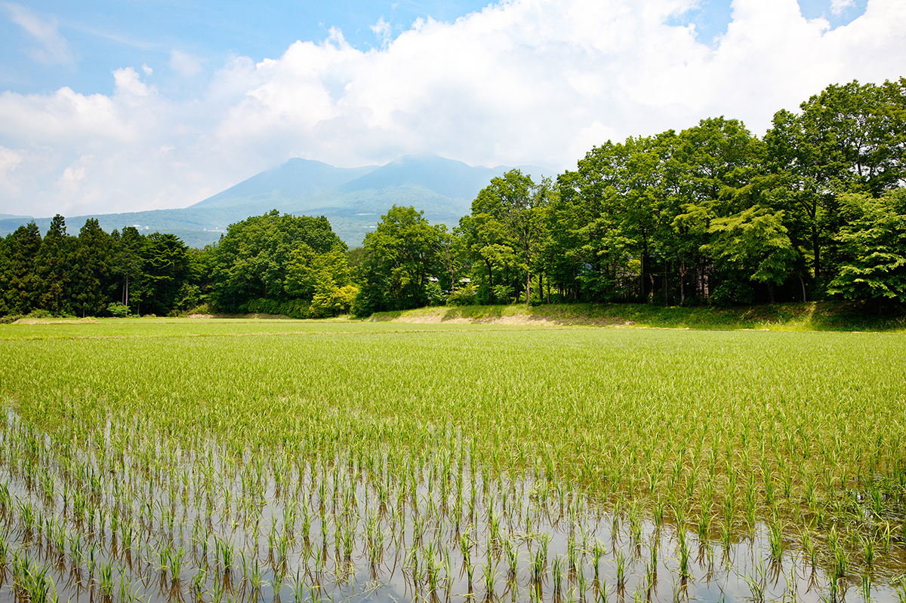
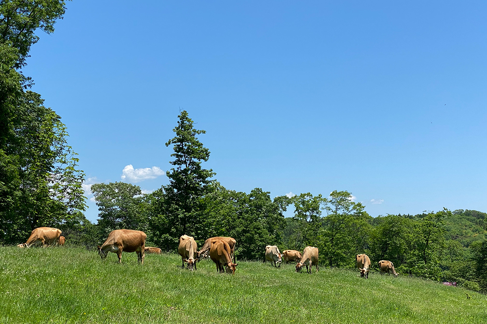
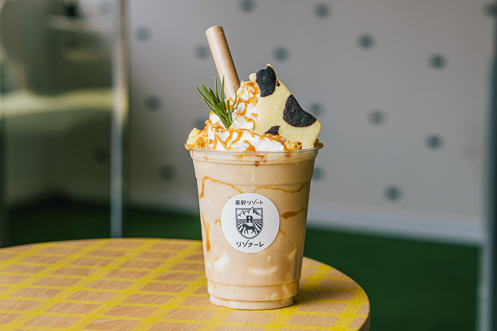
Отдых
Номер в лесу и онсэн с видом на деревья
Можно, конечно, до самого выезда ничего не делать. Номера разбросаны по естественному лесу, и природа видна из каждого окна. Прислушайтесь, и услышите птиц, а иногда к номерам выходят и мелкие звери. Утром стоит сходить в общую баню среди деревьев: после онсэна сил прибавляется на весь день.
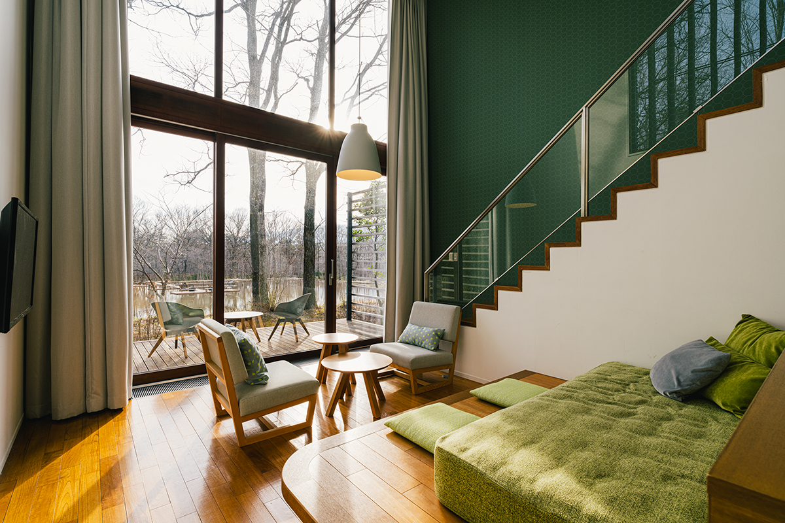
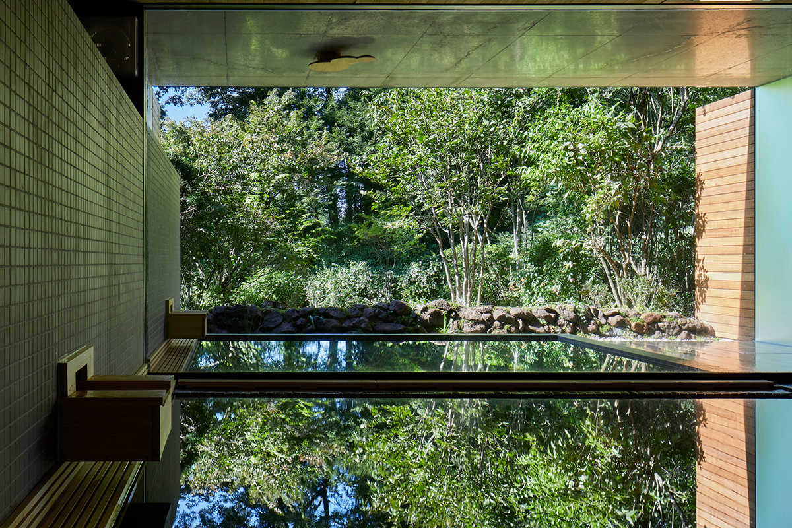
RISONARE Насу
- Адрес
- префектура Тотиги, уезд Насу, Насу, Такаку-оцу, Митисита, 2301
- Телефон
- +81 50-3134-8093 (центр бронирования RISONARE)
- Номера
- 43; от 24 000 иен за ночь с завтраком, с налогом и сервисным сбором
- Заезд / выезд
- 15:00 / 12:00
- Как добраться
- на машине около 20 минут от развязки Насу скоростной дороги Тохоку; от станции Насу-Сиобара бесплатный автобус около 40 минут, по записи
Фото: Ацуси Ямахира.